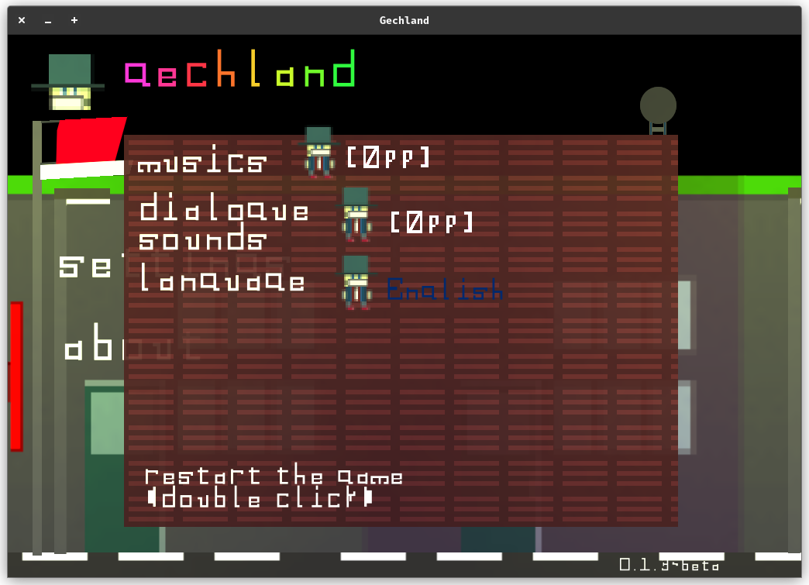

gechland (0.1.3~beta)
Bu sayfanin Ingilizce hali
Gechland'i Indir
Gechland Muzik Albumu
merhaba gech!
gechland'in hikayesi bilim ve politik kurgu romani olan Gefertliler Birligi'nden ilham alir.
gechland 2 boyutlu platformer tarzi bir oyundur.
zar oyunu oynayabilir; gech'e gorus, ziplama mesafesi, yurume hizi gibi ozellikler alabilirsiniz.
ayrica cogu karakterle etkilesime gecebilirsiniz.
bazi karakterler guven faktorune sahiptir, bu da demektir ki diyaloglari degistirir.
gechland ucretsiz olarak indirilebilir!
~2 saatlik bir oynanis suresi sunar.
platformer tarzinda iyi degilseniz ya da senkronize ve hizli sekilde oynayamiyorsaniz,
oyunu oynayamayacaginiz anlamina gelmez ancak oynanis suresini artirmis olursunuz
belki speedrun yapacaksinizdir? oyun 10 dakika da bile bitebilir o zaman.
gechland'i gelistirdim cunku bos vaktim vardi, bosa harcamak istemedim
Windows (x64),
Linux dagitimlari (x32, x64)
platformlarinda oynayabilirsiniz.
onceden gechland'i oynamissaniz (0.1.3-beta vs) (sanslisiniz),
ve oyunu sevdiyseniz;
oyunu su tarz yollarla destekleyebilirsiniz:
* en cok kullanilan muzik platformlarinda gechland'in muziklerini dinleyebilirsiniz (spotify, apple music, youtube music gibi)
(en azindan muzik distributorune odedigim parayi cikartmis olurum :))
* oyunu arkadaslariniza anlatabilirsiniz ya da gechland oynanis videolari paylasabilirsiniz
* oyun hakkinda geri bildirim ve tavsiye verebilirsiniz gibi gibi.
eger onceden oynamissaniz ve oyunu sevmemisseniz, oyunu desteklemek istiyorsaniz sunlari yapabilirsiniz:
* usttekiler aynen gecerli. sevip sevmememiz sizi baglar. buna saygi duyarim.
gechland'da ilk vakitleriniz (ubuntu 22.10'da, 0.1.3~beta):

ana menu:

ayarlar:

hakkinda:
endise etmeyin, oyunu Turkce olarak da oynayabilirsiniz.
(sadece usendigimden Turkce halinin fotograflarini cekmedim)
oyunun ayarlari su dizinlerde tutulur
(eger hile yapmak icin bakiyorsan,
oyun ayarlari duz yazi .wgsd formatiyla saklanir
extra_state kismina dokunmayin, oyundaki ilerlemelerinizi kaybedebilirsiniz.
'gechland.settings' dosyasini silerseniz tum oyun ilerlemeleriniz sifirlanir.
baska bir cihazdan oyuna devam etmek istiyorsaniz, o dosyayi kopyalayin, iste bu kadar!)
Linux dagitimlari icin: ~/.local/share/Gechland
Windows icin: %APPDATA%\Gechland
Bu fonttan nefret mi ettiniz?
Nefretinizi buraya kusabilirsiniz!